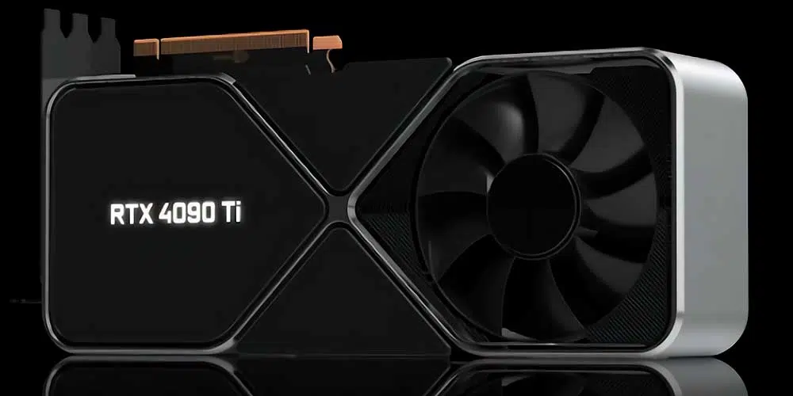
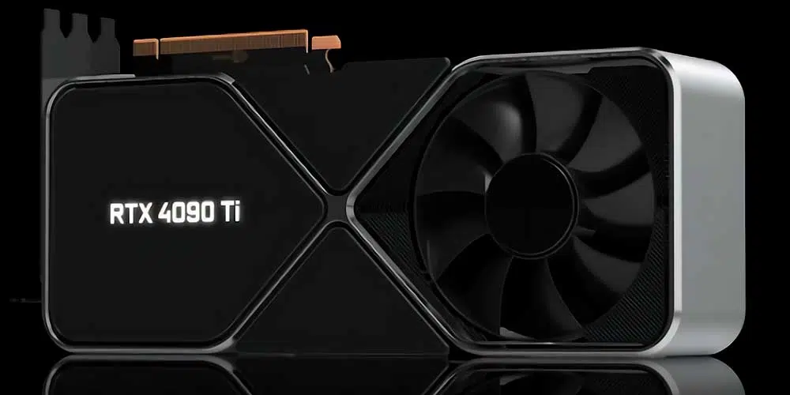
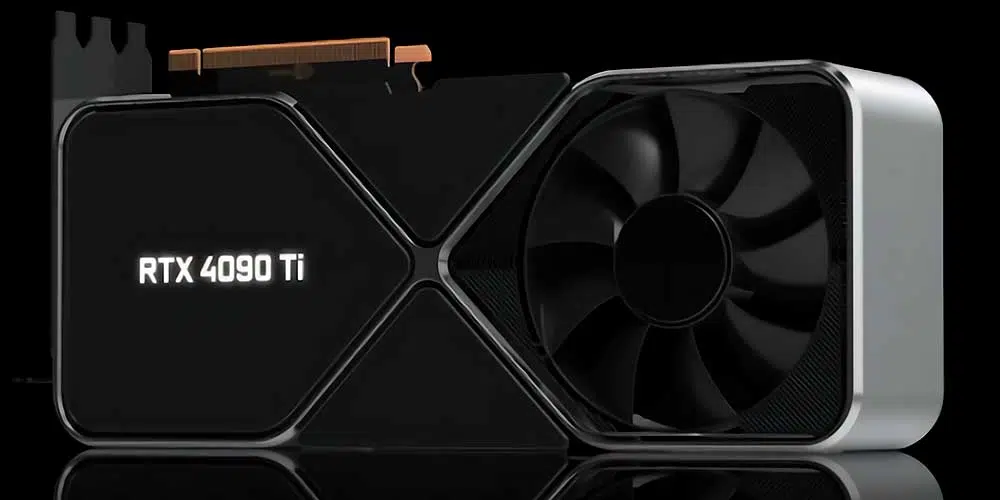

Las GPU NVIDIA® GeForce RTX® serie 40 son más que rápidas para jugadores y creadores. Cuentan con la tecnología de la arquitectura ultra eficiente NVIDIA Ada Lovelace, que ofrece un salto espectacular tanto en rendimiento como en gráficos con tecnología de IA. Disfruta de mundos virtuales realistas con trazado de rayos y juegos con FPS ultra altos y la latencia más baja. Descubre nuevas y revolucionarias formas de crear contenido y una aceleración de flujo de trabajo sin precedentes.
La arquitectura Ada libera toda la gloria del trazado de rayos, que simula cómo se comporta la luz en el mundo real. Con la potencia de RTX serie 40 y núcleos RT de tercera generación, puedes disfrutar de mundos virtuales increíblemente detallados como nunca.

Acapara la atención de todos gracias a unos gráficos increíbles y a una transmisión en directo fluida y sin cortes. La codificación y la decodificación de hardware de última generación se combinan para que presumas de tus mejores momentos con gran detalle. Y la nueva y completa aplicación NVIDIA Broadcast te ofrece potentes capacidades de IA para mejorar la calidad de audio y vídeo con efectos como el fondo virtual, el fotograma automático de la cámara web y la eliminación de ruido del micrófono. Así, siempre podrás dar lo mejor de ti a tu audiencia
Lleva tus proyectos creativos a un nuevo nivel con las GPU GeForce RTX serie 30. Ofrece aceleración por IA en las mejores aplicaciones creativas. Con el soporte de la plataforma NVIDIA Studio de controladores dedicados y herramientas exclusivas. Y creado para obtener resultados en un tiempo récord. Tanto si estás renderizando escenas en 3D complejas, editando vídeo de 8K o retransmitiendo con la mejor codificación y calidad de imagen, las GPU GeForce RTX te ofrecen el rendimiento necesario para tus mejores creaciones.